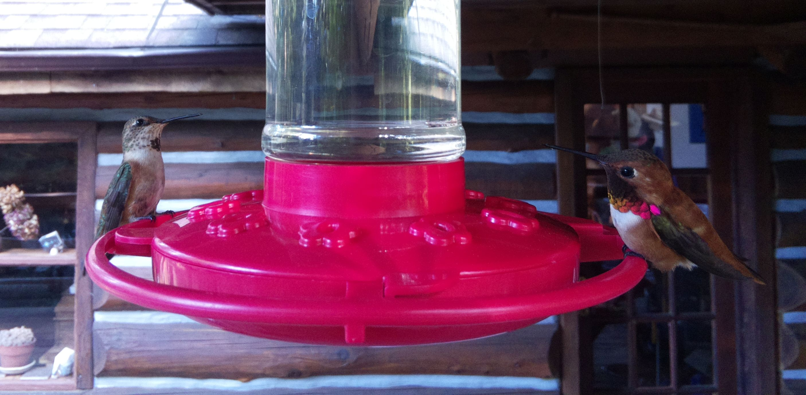
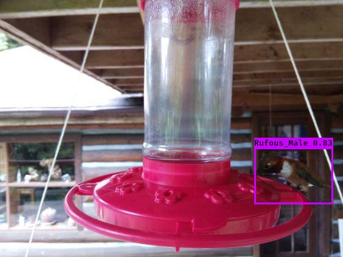
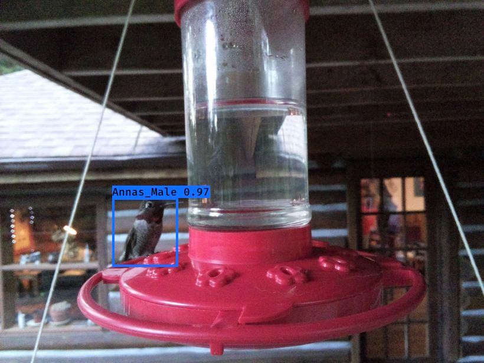
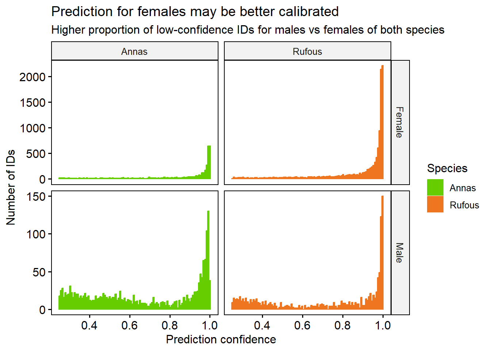
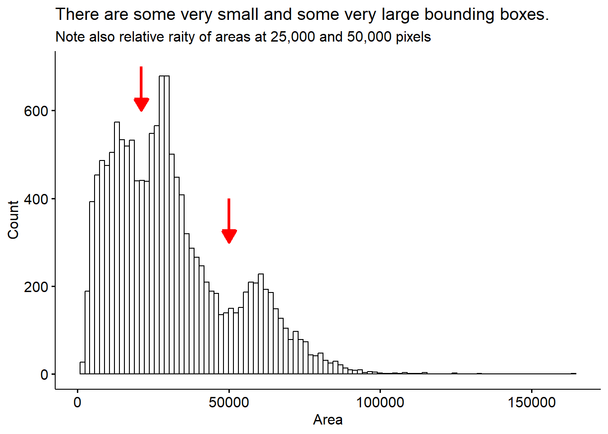
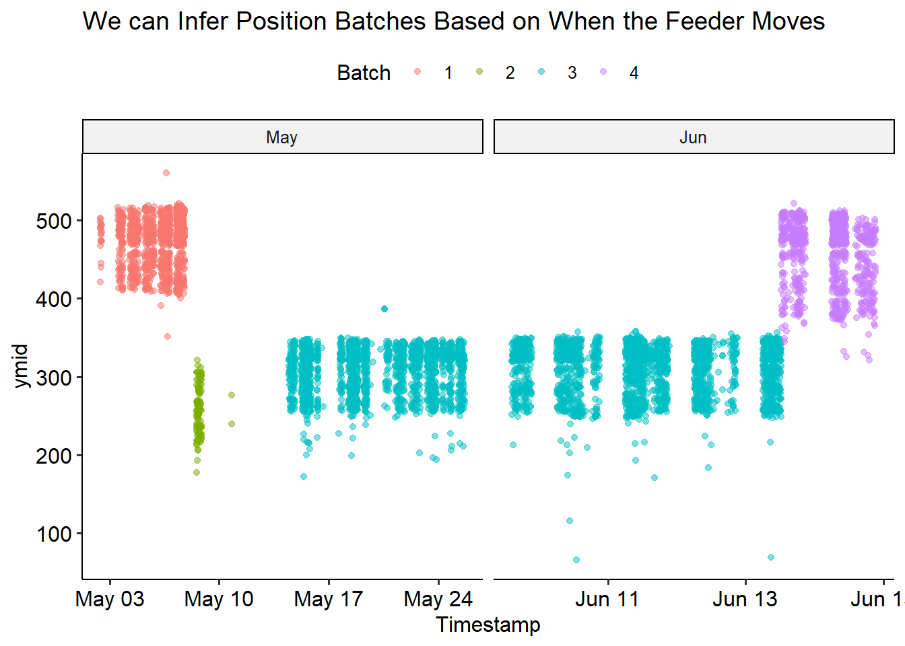
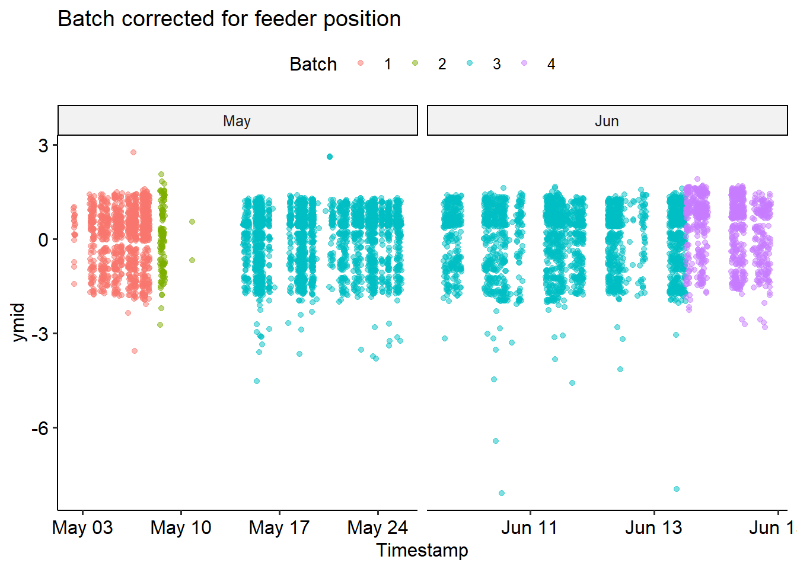
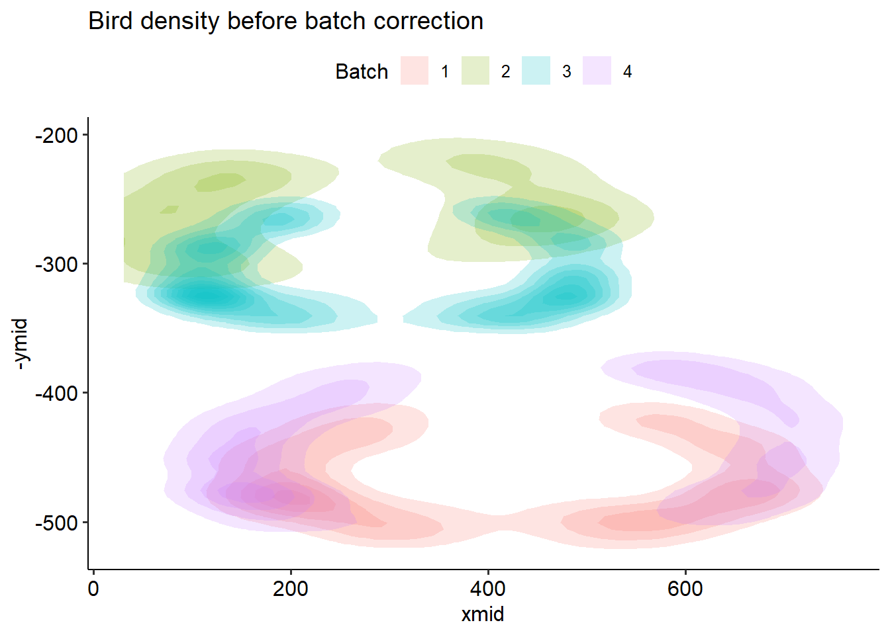
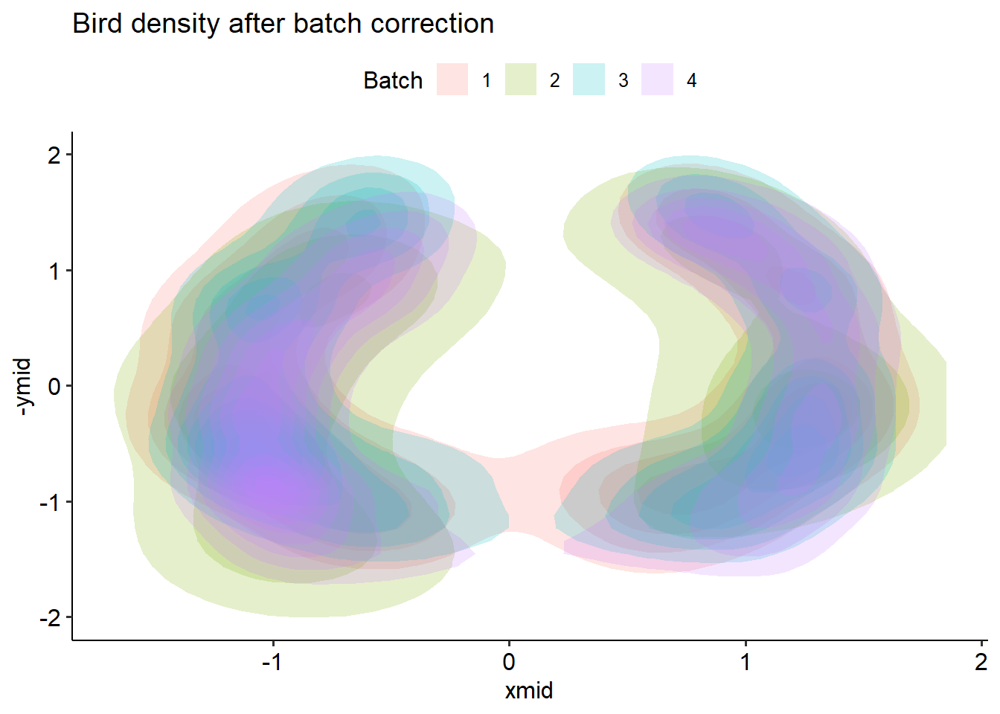
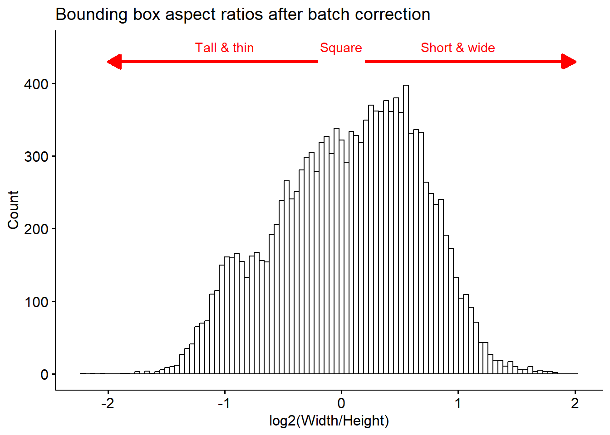

All the data analyzed here was collected in 2021. In the future, we may be able to learn more by comparing across different years. We have images from the hummingbird feeder, and micro-climate data collected from the weather station.
We set up a camera to capture these feathery fellows visiting our hummingbird feeder.

A Female Anna’s (left) and Male Rufus (right) at our feeder
We trained a classifier to detect who’s who….


And we’re even able to keep track of when the feeder needs a refill!
Setup
Lets dive in to some of the data we’ve collected!
We’ll read in and prepare our data: the classifier output as well as bounding boxes of detected birds.
Code
library(tidyverse)library(lubridate)library(patchwork)library(ggpubr)# classifier labelsclasses =c('Rufous_Male', 'Annas_Male', 'Person', 'Annas_Female', 'Rufous_Female')# read in bird detection data, and do some basic data cleaningbird <-read_csv('2021_reprocessed_hummers_combo_2023.csv') %>%# lookup labelsmutate(class = classes[label +1]) %>%# put columns into tidy formatseparate(class, into=c('Species', 'Sex'), sep='_') %>%separate(image, into=c('Date', 'image'), sep="_", remove = F) %>%separate(image, into=c('hhmm'), sep=".jpg", extra ='drop') %>%# clean up timestampsmutate(Timestamp =ymd_hm(paste(Date, hhmm))) %>%# remove peoplefilter(label !=2) %>%# change column types, correct for variable image sizemutate(Date=ymd(Date),Month=factor(month(Date, label = T)),Hour=hour(Timestamp),Species =ordered(Species),Sex =factor(Sex),MergeTime =floor_date(Timestamp, 'hour'),xmid = (xmax+xmin)/2, ymid = (ymax+ymin)/2 )
The bird detector gives us the the bounding box of each bird in an image, and the predicted sex and species of the bird. Note that because it’s hard to distinguish female birds from the immature males, the “female” class label encompasses both of these. Lets take a peek at the data.
Code
knitr::kable(head(bird))
Date
hhmm
xmin
ymin
xmax
ymax
label
confidence
x_size
y_size
Mo
OK
Species
Sex
Timestamp
Month
Hour
MergeTime
xmid
ymid
2021-04-20
1651
154
365
331
514
0
0.8494033
820
616
04
1
Rufous
Male
2021-04-20 16:51:00
Apr
16
2021-04-20 16:00:00
242.5
439.5
2021-04-20
1706
200
382
406
478
0
0.8925107
820
616
04
1
Rufous
Male
2021-04-20 17:06:00
Apr
17
2021-04-20 17:00:00
303.0
430.0
2021-04-20
1718
634
401
814
552
0
0.9755894
820
616
04
1
Rufous
Male
2021-04-20 17:18:00
Apr
17
2021-04-20 17:00:00
724.0
476.5
2021-04-20
1914
164
389
368
507
0
0.6146710
820
616
04
1
Rufous
Male
2021-04-20 19:14:00
Apr
19
2021-04-20 19:00:00
266.0
448.0
2021-04-20
1925
196
389
408
472
0
0.9455948
820
616
04
1
Rufous
Male
2021-04-20 19:25:00
Apr
19
2021-04-20 19:00:00
302.0
430.5
2021-04-20
1942
177
402
378
539
0
0.9968680
820
616
04
1
Rufous
Male
2021-04-20 19:42:00
Apr
19
2021-04-20 19:00:00
277.5
470.5
Number of birds by species
Our bird detector ID’d lots of visitors! Each ID represents a bird captured in an image, and not necessarily an individual. The images are captured once every minute, so if for example a single bird sat at the feeder for two minutes in a row, it would get counted twice. There may be multiple birds in a single image.
There are more Rufouses than Annas, and many more females + immature males than mature males captured in our images.
Classifier confidence
Each bird ID is made by picking the the most likely label, based on the prediction probability. Sometimes, the classifier isn’t as confident as others. For example, it may be harder to identify a bird that is facing away from the camera. We can plot the confidences, and see which birds are the hardest to label.
Code
bird %>%gghistogram(x ='confidence', fill ='Species', color='Species', bins=100,facet.by =c('Sex','Species'), scales ='free_y', alpha=1, position='stack') +labs(title ='Prediction for females may be better calibrated',subtitle ='Higher proportion of low-confidence IDs for males vs females of both species', x ='Prediction confidence', y ='Number of IDs') +theme(legend.position ='right') +scale_fill_manual(values=c('chartreuse3', 'chocolate2')) +scale_colour_manual(values=c('chartreuse3', 'chocolate2'))

There is almost certainly some mistakes in our classifier, including false positives (non-birds labeled as birds) and false negatives (birds that are missed)
To help make sure we’re only considering high-quality calls, we’ll pick a confidence threshold of 0.7 and only analyse the IDs above that level.
🧠 Observation
For both species, mature male birds are slightly harder to identify with high confidence than female + immature male. This may be because there are fewer of them.
Filtering for high-confidence IDs
We manually looked at the images, and found that that almost all the Rufouses after September 1st are false positives, so we’ll remove these observations. Also, since we have few IDs in October compared to other months, we will drop this month from our data. Then, we’ll filter to only retain the high-confidence (> 0.7 prediction probability) bird IDs
Lastly, we’ll sanity check the bounding boxes for their size.
Code
bird <- bird %>%mutate(Height = ymax-ymin, Width = xmax-xmin, Area = Height * Width )bird %>%gghistogram(x="Area", bins =100) +annotate("segment", x =21000, xend =21000, y =700, yend =600, size =1.2,colour ="red", arrow =arrow(type='closed', length=unit(0.04, 'npc'))) +annotate("segment", x =50000, xend =50000, y =400, yend =300, size =1.2,colour ="red", arrow =arrow(type='closed', length=unit(0.04, 'npc'))) +labs(title ='There are some very small and some very large bounding boxes.',subtitle ="Note also relative raity of areas at 25,000 and 50,000 pixels", y ='Count')

This distribution more or less makes sense, we see some very small bounding boxes which may be mis-calls or birds who are only half in the image. There are also some cases where a bird is partially obscured because it’s sitting behind the feeder. There are some very large bounding boxes also. I’m not sure exactly whether these are real, giant humming birds, or some kind of error.
Lets see if looking at the bird position with respect to the feeder helps sort this out.
Batch correction and normalization
We can plot the location of where each bird sits, with the proxy that a birds will be located at the center of its bounding box (indicated by xmid and ymid). The birds appear to mostly sit in a circle, around the rim of the feeder. This gives the best access to the sugar water.
However, it looks like there are at least 2 distinct positions that the feeder was in over the summer. We’ll try to do batch correction for this, by assigning a batch number to each position, and subtract the average from the x and y direction. I think we can reasonably split the changes in position (the batches) simply by the date. This is easy to see in the ymid variable - the feeder moves twice in May, and once in June.
Code
bird %>%mutate(Month =month(Date, label=T)) %>%filter(Date>'2021-05-01'& Date<'2021-06-15') %>%ggplot(aes(x=Timestamp, y = ymid))+geom_jitter(alpha =0.5) +facet_wrap("~Month", scales ='free_x') +theme_pubr() +labs(title ='Feeder Moves Up and Down in May and June')
We can check it went as expected by recolouring the previous plot by batch
Code
bird %>%mutate(Month =month(Date, label=T)) %>%mutate(xmid = (xmax+xmin)/2, ymid = (ymax+ymin)/2) %>%filter(Date>'2021-05-01'& Date<'2021-06-15') %>%ggplot(aes(x=Timestamp, y = ymid, color=Batch))+geom_point(alpha =0.5) +facet_wrap("~Month", scales ='free_x') +theme_pubr() +labs(title ='We can Infer Position Batches Based on When the Feeder Moves',colour ='Batch')

Now we’re ready to correct! We’ll transform all the x- and y- values by centering and scaling each batch. This will yield a new positioning relative to the middle of the feeder; we can no longer interpret this as the pixel index in the image. We’ll normalize the “mid” locations, then add the size of the bounding box back.
bird_scaled %>%filter(Date>'2021-05-01'& Date<'2021-06-15') %>%ggplot(aes(x=Timestamp, y = ymid, color=Batch))+geom_point(alpha =0.5) +facet_wrap("~Month", scales ='free_x') +theme_pubr() +labs(title ='Batch corrected for feeder position',colour ='Batch')

We can see that the correction didn’t perfectly fix things - but it looks pretty good! From now on, we’ll use the bird_scaled dataframe.
Code
bird %>%ggplot(aes(x=xmid, y=-ymid) ) +stat_density_2d(aes(fill=Batch), geom ="polygon", alpha=0.2) +theme_pubr() +labs(title ='Bird density before batch correction', fill ='Batch')bird_scaled %>%ggplot(aes(x=xmid, y=-ymid) ) +stat_density_2d(aes(fill=Batch), geom ="polygon", alpha=0.2) +theme_pubr() +labs(title ='Bird density after batch correction',fill ='Batch')


The gap in the middle comes from the water column - we can’t detect birds sitting behind it! Of course, we have to be somewhat careful when converting back to the coordinates of the image. I negate the y coordinates, because they count down from the top of the image.
Now we have our corrected bounding boxes! However, since we z-score normalized height and width, there are some negative values. This doesn’t make sense, so we’ll bring these back to the original space by using ungroup to add back the (pooled) mean and standard deviation. At the same time, we can filter out some extreme values (>2 sd from mean).
There are some boxes that may have got warped through the normalization, especially in batches 1 and 3, but for the most part it’s not terribly far off.
Code
bird_scaled %>%gghistogram(x="log2(Width/Height)", bins =100) +labs(title ='Bounding box aspect ratios after batch correction',subtile ='Relative rarity of values at 18,000 and 38,000',y ='Count') +annotate("segment", x =-0.2, xend =-2, y =430, yend =430, size =1.2,colour ="red", arrow =arrow(type='closed', length=unit(0.04, 'npc'))) +annotate('text', label ='Tall & thin', colour ='red', x =-1, y =450) +annotate("segment", x =0.2, xend =2, y =430, yend =430, size =1.2,colour ="red", arrow =arrow(type='closed', length=unit(0.04, 'npc'))) +annotate('text', label ='Short & wide', colour ='red', x =1, y =450) +annotate('text', label='Square', x =0, y =450, colour ='red')

🧠 Observation
There are more short and wide bounding boxes than tall and thin ones.
Number of ID’s after filtering
After all this filtering, here’s the final numbers of each class label:
There are more Rufouses than Annas, and many more females than males captured in our images.
Summary
We’ve filtered out low-confidence ID’s and suspicious aspect-ratio bounding boxes. Each row in our dataframe corresponds to a picture of a bird, not necessarily an individual. Female and immature males are not possible to distinguish, they are both classified as females. There are more birds labeled as female than male for both Anna and Rufous. There are more Rufous than Anna. Bounding boxes tend to be short and wide more often than tall and thin.
We’ll save the prepared bird_scaled dataframe for future use.